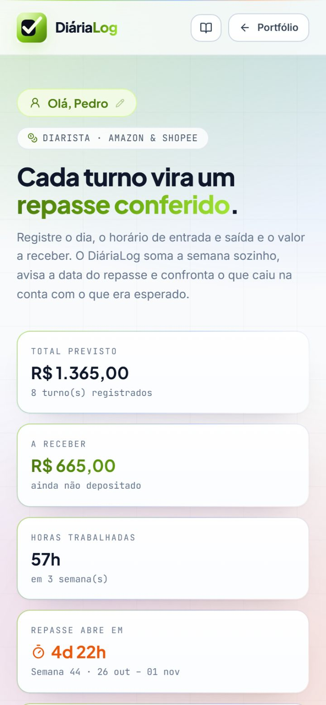
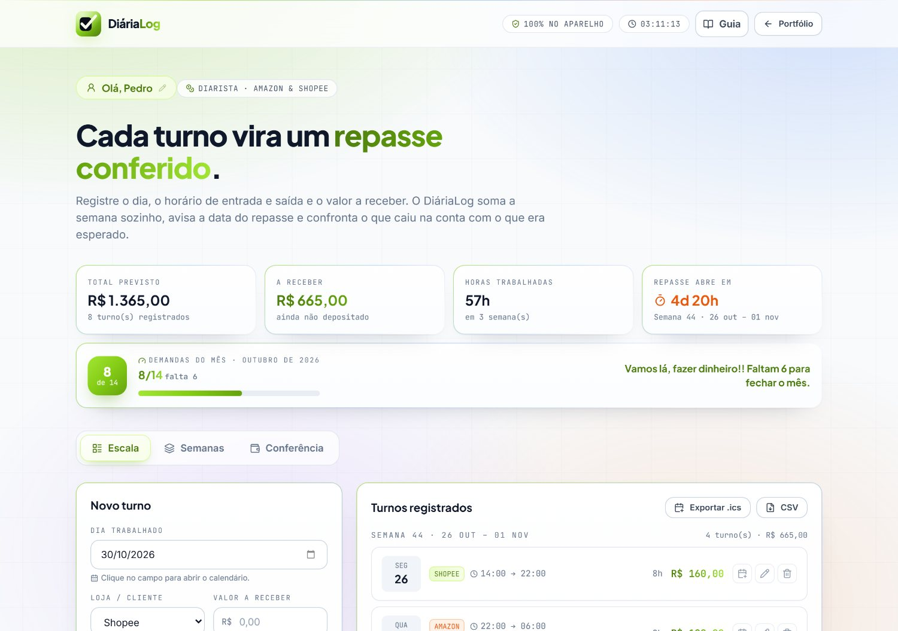
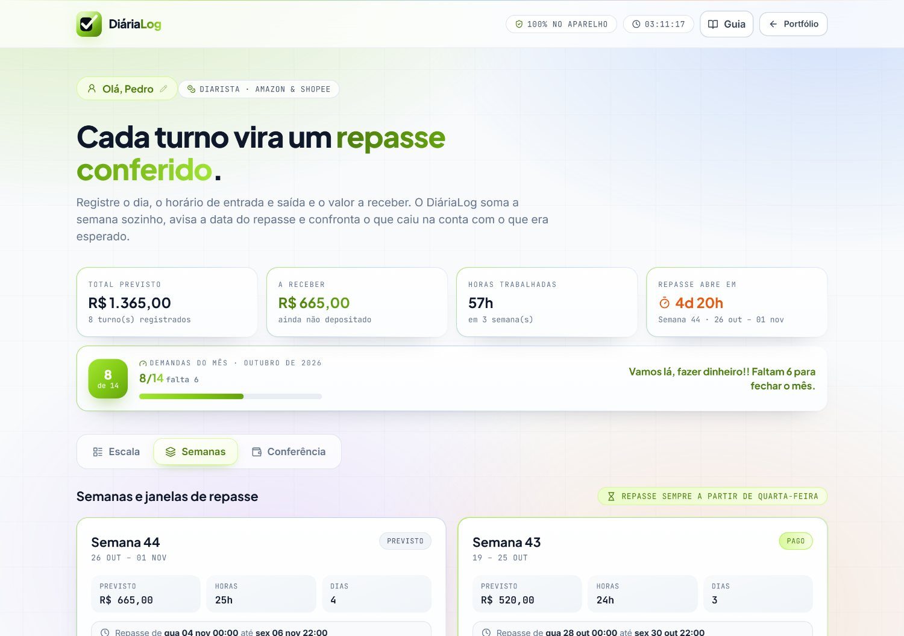
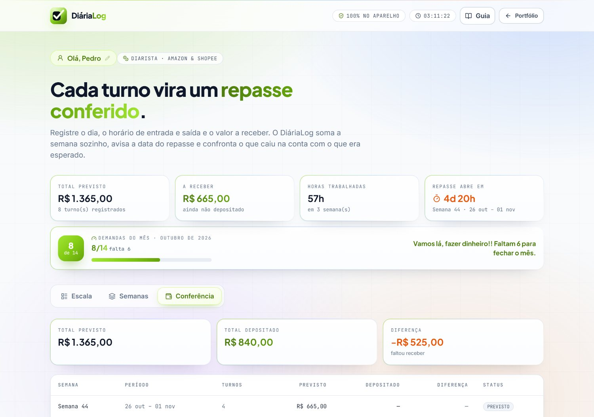

Como usar o DiáriaLog para registrar sua escala, somar a semana sozinho, acompanhar o limite de demandas do mês e conferir o que caiu na conta.
DIARIALOG.VERCEL.APP · AMAZON & SHOPEE · 100% NO APARELHO
Dez capítulos, do primeiro registro até a conferência do repasse. Cada item abaixo é um link: clique e vá direto.
O DiáriaLog não pede conta, não pede senha e não manda nada para servidor nenhum. Tudo o que você registra fica guardado no próprio aparelho. Por isso, o capítulo 07 (backup) é o mais importante do guia.
É o caderno de bolso de quem trabalha como diarista em centro de distribuição. Você registra o turno; ele soma a semana, avisa a data do repasse e confronta o que era esperado com o que caiu na conta.
Cada turno cai na semana certa (segunda a domingo). Você não precisa calcular nada — o total previsto, as horas e o valor a receber já ficam no topo da tela.
O repasse da semana que você trabalhou sempre cai na semana seguinte, entre quarta-feira 00:00 e sexta-feira 22:00. Um cronômetro no topo mostra quanto falta para abrir.
Na aba Conferência, cada semana mostra o que era para receber, o que entrou e a diferença. Você sabe na hora se caiu tudo.
| Se você trabalhou… | Então… |
|---|---|
| De segunda a domingo | Conta como semana ISO — a mesma que o banco usa. |
| Entrou às 22:00 e saiu às 06:00 | Conta como 8 horas: o app entende a virada da meia-noite. |
| Turnos de várias lojas | Somam juntos no mesmo total, separando por loja e por semana. |
| 14 turnos no mesmo mês | O contador de demandas mostra que você chegou ao limite. |
Porque o diarista perde dinheiro no acumulado: uma semana de turnos que não foi somada, um depósito que passou batido, uma demanda a mais que o limite. O DiáriaLog existe para essas três coisas pararem de acontecer.
Não precisa instalar nada. Abra o site no navegador do celular ou do computador e faça o primeiro registro. Na primeira vez o app pergunta seu nome: ele fica guardado no seu aparelho e o site te chama por ele.
diarialog.vercel.app
No celular dá para instalar: no Android (Chrome) use ⋮ → Adicionar à tela de início; no iPhone use Compartilhar → Adicionar à Tela de Início. O site abre em tela cheia, com o ícone do DiáriaLog.
Dia trabalhado, loja, entrada, saída e valor a receber. Clique em qualquer ponto do campo do dia para abrir o calendário.
Pronto. O turno entra na lista, a semana é somada, o total do topo se atualiza e o contador de demandas do mês sobe junto.
Os quatro cartões do topo mostram total previsto, a receber, horas trabalhadas e quando o repasse abre ou fecha. Embaixo, o painel verde mostra quantas demandas você já fez no mês.

É onde o dia vira registro. Um turno por linha, com tudo que a conferência vai precisar depois.

| Campo | O que colocar |
|---|---|
| Dia trabalhado | O dia em que você trabalhou. Clique no campo para abrir o calendário nativo. |
| Loja / Cliente | Shopee, Amazon, Fenix ou Outro — fica como etiqueta no registro. |
| Entrada e Saída | Horários, só números: digite 08 e o app escreve 08:00 (sem abrir relógio). Para 08:45, siga digitando 45 — ou toque no :00 e troque. Se a saída for menor que a entrada, o app entende que você passou da meia-noite. |
| Valor a receber | Quanto vale este turno. É o que entra na soma da semana. Digite 100 e o app completa 100,00. |
| Observação | Opcional. Ex.: “CD noturno”, “avaliação da semana”. |
22:00 → 06:00 vira 8 horas automaticamente. O app soma 2h do primeiro dia + 6h do dia seguinte, mas mantém tudo na data que você registrou.
Enquanto você preenche, o card “como fica no seu calendário” mostra o título exato do evento antes de salvar.
Botão Exportar .ics gera um arquivo para o Google Agenda, ou use o botão de calendário no próprio registro para abrir direto no Google.
Cada semana vira um cartão com o total, as horas, os dias trabalhados e a janela exata em que o dinheiro cai.

| Previsto | Ainda não chegou a hora do repasse. |
| Em trânsito | Janela aberta: o valor está a caminho. |
| Pago | Você marcou o depósito. Fechado. |
| Atrasado | Passou de sexta 22:00 sem depósito. |
Sempre quarta-feira 00:00 → sexta-feira 22:00, na semana seguinte à que você trabalhou. Não tem como errar a data: o app calcula.
Dentro do cartão da semana, informe o valor que caiu e a data em que caiu. O status passa para “Pago” e a tela de Conferência já mostra a diferença zerada (ou não).
Se o valor veio um pouco diferente do previsto, o app não esconde a diferença — ele mostra exatamente quanto faltou ou sobrou. Foiai que você compara com o extrato.
Marque o depósito no mesmo dia em que ele cair. Depois de sexta 22:00 a semana vira “Atrasado” — e aí o valor deixa de ser “a receber” e vira cobrança.
Uma tabela com o resumo financeiro do mês, semana por semana. É aqui que você descobre se caiu tudo.

| Coluna | O que mostra |
|---|---|
| Previsto | A soma de todos os turnos daquela semana. |
| Depositado | O que você registrou que caiu na conta. |
| Diferença | Previsto − depositado. Zero é o objetivo. Negativo é o que falta cair. |
CSV de conferência e CSV de turnos abrem na planilha, prontos para conferir com o extrato.
Importar backup (JSON) restaura tudo — inclusive o histórico de meses anteriores.
Limpar tudo apaga os registros. O app pede confirmação antes.
Limpar apaga também o histórico de demandas dos meses anteriores. Antes de apagar, o app mostra um aviso com o aviso de confirmação — e o botão “Não, cancelar” vem já selecionado, para você não apertar sem querer.
Existe um limite de 14 demandas por mês. O painel verde no topo do app mostra onde você está — e nunca deixa você chegar lá sem perceber.
Vamos lá, fazer dinheiro!! Faltam 6 para fechar o mês.
| Situação | Mensagem na tela |
|---|---|
| Nenhuma demanda ainda | “Bora começar? Vamos lá, fazer dinheiro!!” |
| Faltando 3 ou menos | “Falta só N! Vamos lá, fazer dinheiro!!” |
| No meio do mês | “Vamos lá, fazer dinheiro!! Faltam N para fechar o mês.” |
| 14 de 14 | “Limite de 14 demandas batido! Mês fechado em cima.” |
O contador conta os turnos do mês corrente e sobe a cada registro. Não precisa marcar nada.
A barra verde mostra o quanto do mês você já usou. Quando chega a 100%, o mês está fechado.
Ao salvar um turno, aparece um aviso na tela com a nova contagem e a frase de incentivo.
O app foi feito para ser usado em pé, na doca, com uma mão só. Instale na tela de início e ele vira um ícone como qualquer outro app.
Android (Chrome): ⋮ → “Adicionar à tela de início”.
iPhone (Safari): Compartilhar → “Adicionar à Tela de Início”.
Depois da primeira visita, o site abre offline: dá para registrar turno no meio do expediente, sem sinal.
Cada aparelho guarda os seus próprios dados. Para levar do PC pro celular: aba Conferência → Exportar CSV (ou o backup JSON) → copie o arquivo → no outro aparelho, “Importar backup”.
Limpar os dados do navegador, desinstalar o app ou trocar de celular apaga o histórico. Guarde uma cópia do backup de vez em quando — leva 5 segundos e salva um mês de trabalho.
Consulta rápida para o dia a dia.
| Quando eu quero… | Eu faço assim |
|---|---|
| Saber quanto ainda vou receber | Card “A receber”, no topo do app. |
| Saber quando abre o repasse | Card “Repasse abre em” + aba Semanas. |
| Conferir se caiu tudo | Aba Conferência → coluna Diferença. |
| Corrigir um turno | Clique no lápis do registro na lista da Escala — o app já te leva até a área de edição. |
| Apagar um turno | Clique na lixeira do registro. |
| Levar o turno para o calendário | Botão de calendário no registro, ou Exportar .ics. |
| Ver meus números na planilha | Aba Conferência → Exportar CSV. |
| Não perder nada | Backup JSON na aba Conferência, guardado fora do aparelho. |
Registre o turno no mesmo dia. Na semana seguinte você já esqueceu os horários, e é o horário que faz a hora ser contada.
Não arredonde o valor. Deixe o valor exato do turno — a conferência fica certeira e a diferença de centavos aparece na hora.
Depois que a semana virar Pago, ela continua visível no histórico. Dá para conferir o mês anterior quando quiser.
Não. Sem e-mail, sem senha, sem cadastro. Abre e usa.
Só na primeira visita. Depois dá para usar offline e registrar normalmente.
Não. Ficam no navegador do seu aparelho. Ninguém mais vê.
Pode, mas cada um guarda os seus dados. Use o backup (cap. 07) para levar de um para o outro.
Na aba Escala, use o lápis para editar ou a lixeira para remover.
Sim — o campo aceita qualquer data. Mas o contador de demandas segue o mês corrente.
Pela semana ISO: o repasse cai na semana seguinte, entre quarta 00:00 e sexta 22:00.
Não. Sem servidor, sem mensalidade, sem assinatura.
Abra a aba Conferência → Carregar exemplo para ver o app funcionando com dados de demonstração antes de registrar os seus. E lembrando: o botão Limpar tudo apaga tudo — turnos, conferências e o histórico de meses anteriores.
Vale deixar isso claro: o DiáriaLog é um app local. Isso é bom por privacidade — e tem um preço, que é o backup.
No armazenamento local do aparelho. O app não envia nada para lugar nenhum: não há servidor, não há analytics, não há conta.
Ninguém pode ver, vender ou perder seus registros. Mas também ninguém consegue recuperá-los se o aparelho for formatado.
Um arquivo JSON com tudo. Guarde no e-mail, na nuvem ou no pendrive. Para restaurar, é só importar de volta.
| 1 · Faça o backup | Aba Conferência → Exportar CSV e o backup JSON. Guarde fora do aparelho. |
| 2 · Repita todo mês | Um backup por mês basta para não perder trabalho. |
| 3 · Não use “Limpar tudo” por engano | O app avisa e mostra quantos turnos e meses serão apagados. |
| 4 · Ao trocar de celular | Exporte no antigo, importe no novo. Pronto. |
Seus turnos são seus. Ninguém precisa saber — nem o app, nem a internet, nem o servidor. E, com um backup em mãos, você pode trocar de aparelho quando quiser.
Se você ler só uma página deste guia, seja esta.
Aba Escala → dia, loja, entrada, saída, valor → Registrar turno. Em segundos, na fila.
Aba Semanas: total, horas e a data do repasse — quarta a sexta, sempre na semana seguinte.
Aba Conferência: previsto, depositado e diferença. Marque o depósito no dia em que cair.
| Limite de demandas | 14 por mês — o contador verde no topo mostra X/14 e o quanto falta. |
| Janela de repasse | Quarta 00:00 → sexta 22:00, na semana seguinte à do trabalho. |
| Status da semana | Previsto → Em trânsito → Pago · ou Atrasado, se passar de sexta 22:00. |
| Turno noturno | Saída menor que a entrada vira meia-noite (22:00 → 06:00 = 8h). |
| Onde ficam os dados | No seu aparelho. Sem servidor, sem conta, sem login. |
| Backup | Aba Conferência → Exportar CSV e Importar backup (JSON). |
| Limpar tudo | Apaga turnos, conferências e o histórico de meses anteriores — com confirmação. |
DIARIALOG.VERCEL.APP
Guia rápido · versão 1.0
Desenvolvido por Wesley Carvalho